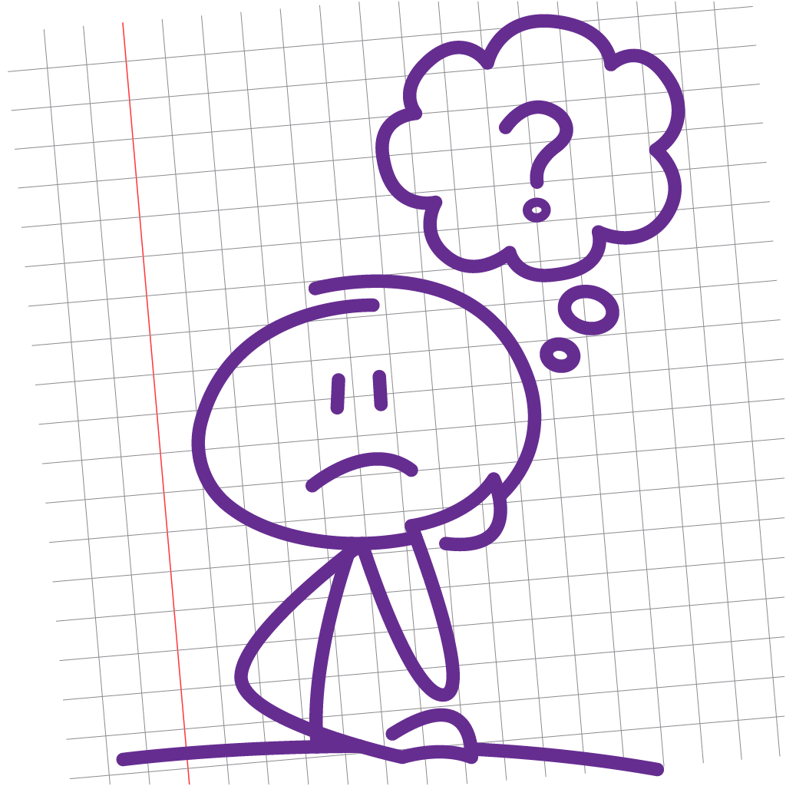

Terms and Conditions – Cansino
Effective date: 2025-08-16
These terms and conditions apply to the Cansino app (the “Application”)
for mobile devices created by .zipcave (nino.zip94) (“Service Provider”),
offered as a freemium service. By downloading or using the Application,
you agree to be bound by these terms.
1. Acceptance of Terms
Please read these terms carefully. Unauthorized copying, reverse engineering,
extraction of source code, or creation of derivative works is prohibited.
All intellectual property rights in the Application remain with the Service Provider.
2. In-App Purchases & Tokens
Cansino offers optional in-app purchases (processed by Apple via StoreKit and
managed by RevenueCat) for token packs. Tokens are a virtual item used
inside the app (e.g., to create challenges, temporarily pause ads, or receive
small rewards).
- No cash value: Tokens are not real money, have no monetary value,
are non-redeemable for cash, non-refundable, non-transferable, and can only be used within Cansino.
- All sales final: Purchases are final except where required by Apple’s refund policies.
- Wallet & holds: When you start a challenge, tokens may be placed on hold
until the challenge is completed or fails. If you win, the hold is released and a
small bonus may be granted; if you lose/cancel, the held tokens may be deducted.
- Fair use: You agree not to manipulate the token system (e.g., automated actions,
fake engagement, device spoofing, ad fraud). We may reverse balances or restrict access in case of abuse.
- Economy changes: We may adjust token prices, rewards, or challenge rules prospectively.
We will not reduce previously purchased token balances but may change how future tokens are earned or used.
3. Ads & Ad-Free Periods
- The free tier may display ads via Google AdMob. In applicable regions,
Google UMP (User Messaging Platform) is used to collect consent for ad personalization.
- If you do not consent, the app will show non-personalized (contextual) ads.
- You may use tokens to activate a temporary ad-free period. During that time,
the app suppresses ad requests. When the period ends, ads resume unless you activate another ad-free period.
- ATT (IDFA): If we request Apple’s App Tracking Transparency permission in the future,
you will see the iOS prompt. The app functions even if you decline.
4. Challenges (Motivational, not Gambling)
Challenges are goal-oriented tasks designed to help reduce procrastination. Outcomes depend solely on your
task completion—not on chance. Cansino does not offer real-money prizes or wagering.
Tokens used in challenges are a game mechanic to encourage consistency.
5. Usage & Restrictions
- You agree not to misuse the Application or interfere with its normal operation.
- Do not jailbreak/root your device; doing so may compromise security or break functionality.
- Do not attempt to circumvent ads, tamper with the wallet, exploit bugs, or use automation/bots.
6. Connectivity & Liability
- The Service Provider is not responsible for malfunctions due to lack of internet,
device issues, or unsupported OS versions.
- You are responsible for any carrier/network charges incurred while using the Application.
7. Updates & Termination
The Application may be updated to maintain compatibility or enhance functionality.
Updates may be required to continue using certain features. We may discontinue or
suspend the Application (or specific features) at any time.
8. Data & Privacy
The Application is primarily local-first; your tasks, challenges, and wallet data
are stored on your device. We use third-party SDKs for ads (AdMob/UMP) and purchases (StoreKit/RevenueCat).
For details, see our Privacy Policy.
9. Disclaimers
- Cansino is a productivity tool; results may vary. We do not guarantee specific outcomes.
- Cansino is not financial advice, mental-health treatment, or gambling.
10. Age
The Application is not directed to children under 13. We do not knowingly collect personal data from children.
11. Changes to These Terms
We may update these terms from time to time. Changes will be posted on this page and take effect immediately.
Continued use of the Application implies acceptance of the updated terms.
12. Contact
For questions about these Terms and Conditions, contact:
nino.zip94@gmail.com
These terms are provided for informational purposes and do not constitute legal advice.
If you have specific legal requirements, consult a qualified professional.